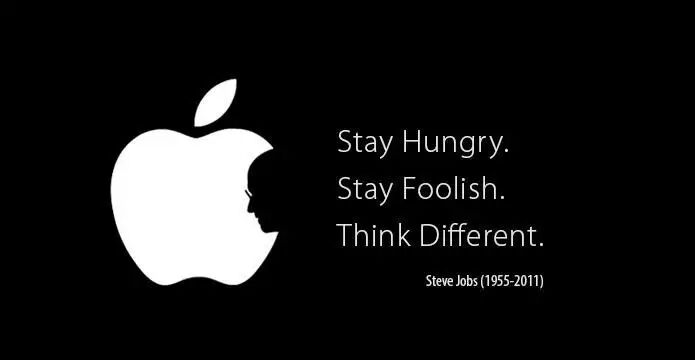
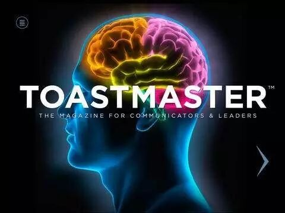

Time：19:30-21:30, Friday, March 17th
Venue: Room B104, New Main Building, Beihang University.
A active or initiative guy can finish some tasks or work perfectly without anybody's supervision or urge.
A kind of active people is more likely to do things well with sense of responsibility,.Under the positive and optimistic mental attitude, they are not afraid of failure and frustration , they tend to think through a problem.That's the reason why it's easy for them to achieve what they want.
Toastmasters will gather the elite from all walks of life to share and talk about how they keep active in their life in this Friday (17th) night at 19:30 @ B104, New Main Building, Beihang University.
Prepared speech part(CC)
Speaker 1: Qiqi CC5 Stay hungry

Steve Jobs is the famous one who change the world , the sentence he said is told from month to month just like a motto motivates everyone to explore the unknown.Parhaps Qiqi is inspired by these 6 words and she has more details to spare~
-------------------------------------------------------------------------------------------------------------
Speaker 2: Bowen CC9 Dissertation defense
Dissertation defense is the grad they confront. An answerer has to prepare for his own dissertation, and consider about what may cause fault in defense. This is not only a challenge for professional knowledge but also for mentality.Bowen wants to tell me what we should do in defense.


https://mp.weixin.qq.com/s/yNWe1SqiI-Un2MGiGyf6bQ
本页为抢救式本地归档，图文已永久保存。